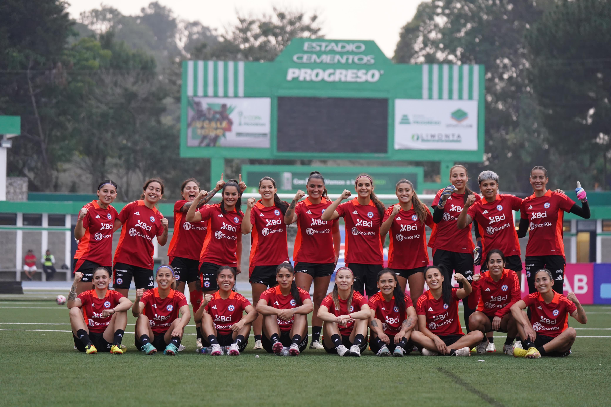

Guerreras de la Roja
Bienvenidos a "Guerreras de la Roja", una webstory que explora la trayectoria y los desafíos de la selección femenina de fútbol de Chile. Nuestra hipótesis central es que hay una falta de representación de las mejores jugadoras de los campeonatos chilenos en el equipo citado a los partidos amistosos de la selección femenina en los últimos 6 años.
La representación equitativa en la selección nacional es crucial para el desarrollo del fútbol femenino en Chile. Garantizar que las jugadoras más talentosas y destacadas de los campeonatos nacionales tengan la oportunidad de competir en el escenario internacional no solo fortalece el equipo, sino que también inspira a las futuras generaciones de futbolistas.
¿Cómo se compone la selección femenina?
Las Guerreras de la Roja en los Juegos Panamericanos 2023 demostraron su talento y determinación. Estas Guerreras de la Roja no solo representaron a nuestro país con orgullo, sino que también dejaron una marca imborrable en el torneo.
El corazón del equipo estuvo compuesto por:
- Jugadoras veteranas:
- Tiane Endler: Capitana y guardiana del arco, reconocida mundialmente.
- Karen Araya: Mediocampista experimentada, clave en la creación de oportunidades.
- Yanara Aedo: Delantera veloz y hábil, amenaza constante para las defensas contrarias.
- Jóvenes promesas:
- Isidora Olave: Defensa joven con una gran capacidad de anticipación y madurez en el campo.
- Sofia Hartard: Mediocampista precisa en sus pases y fundamental para conectar la defensa con el ataque.
- Fernanda Pinilla: Delantera prometedora, destacada por su olfato goleador.
La diversidad de edades entre las jugadoras fue una de las fortalezas del equipo. Esta mezcla permitió combinar la sabiduría y la experiencia de las jugadoras veteranas con la energía y la frescura de las más jóvenes.
Durante el torneo, las Guerreras de la Roja enfrentaron a equipos de alto nivel, mostrando su capacidad competitiva y su constante crecimiento. Cada partido fue una prueba de su esfuerzo y dedicación, inspirando a futuras generaciones de futbolistas.
La participación de la selección femenina en los Juegos Panamericanos 2023 destacó el avance del fútbol femenino chileno. Con una mezcla perfecta de experiencia y juventud, estas jugadoras continúan elevando el nivel del deporte y dejando una huella duradera en la historia del fútbol.
Datos y Estadísticas
Analizaremos la representación de las mejores jugadoras del campeonato chileno en los partidos amistosos de la selección femenina de Chile durante los últimos 6 años. Utilizamos dos conjuntos de datos: uno que muestra las apariciones en partidos amistosos y otro que muestra las goleadoras del campeonato chileno. Nuestro objetivo es evidenciar la desconexión entre el rendimiento en los campeonatos locales y la selección para el equipo nacional, respaldando nuestra hipótesis.
Los datos muestran una clara desconexión entre el rendimiento en los campeonatos nacionales y la selección para partidos amistosos. Jugadoras con altas estadísticas de goles, como María José Urrutia y Yenny Acuña, tienen relativamente pocas apariciones en amistosos, mientras que otras goleadoras como Verónica Riquelme no han sido convocadas consistentemente. Esto respalda nuestra hipótesis de que hay una falta de representación de las mejores jugadoras de los campeonatos chilenos en el equipo citado a los partidos amistosos de la selección femenina en los últimos 6 años.
Perfiles de Jugadoras
En esta sección, destacamos los perfiles de las jugadoras más importantes tanto en la selección femenina de Chile como en los campeonatos nacionales. Nuestro objetivo es resaltar la disparidad entre las apariciones en partidos amistosos y el rendimiento en los campeonatos nacionales.
El análisis de los perfiles de estas jugadoras revela una clara disparidad entre el rendimiento en los campeonatos nacionales y las apariciones en partidos amistosos de la selección nacional. Jugadoras como María José Urrutia y Yenny Acuña, que tienen un rendimiento sobresaliente en los campeonatos nacionales, no están siendo adecuadamente representadas en la selección nacional. Esta desconexión resalta la necesidad de un sistema de selección más equitativo y basado en méritos.
Verónica Riquelme

Verónica Riquelme es una de las delanteras más prolíficas del fútbol chileno, destacándose en los campeonatos nacionales con una impresionante cantidad de goles. Sin embargo, a pesar de su evidente talento y capacidad goleadora, Riquelme no ha sido convocada para los partidos amistosos de la selección nacional, lo que plantea una pregunta importante: ¿Por qué una jugadora tan destacada no tiene apariciones en estos encuentros preparatorios?
- Carrera: Verónica Riquelme ha construido una carrera impresionante en el fútbol femenino chileno. Su habilidad para encontrar el fondo de la red y su consistencia en el campo la han convertido en una figura esencial para su club. En la última temporada, Riquelme anotó 89 goles, consolidándose como una de las máximas goleadoras del campeonato chileno.
- Ausencia en Amistosos: A pesar de su éxito a nivel de clubes, Riquelme no figura en las convocatorias para los partidos amistosos de la selección nacional. Posibles razones incluyen:
- Estrategia del Cuerpo Técnico: Es posible que el cuerpo técnico prefiera evaluar a otras jugadoras en los amistosos, reservando a Riquelme para los partidos oficiales. Esta estrategia puede estar basada en la necesidad de probar diferentes combinaciones de jugadoras y no sobrecargar a las titulares.
- Compatibilidad con el Sistema de Juego: Otra posible explicación es que, aunque Riquelme sea una excelente goleadora a nivel de clubes, su estilo de juego puede no encajar perfectamente con el sistema táctico que el entrenador de la selección busca implementar. Los amistosos podrían ser utilizados para encontrar jugadoras que se adapten mejor a esta táctica específica.
- Factores Externos: También hay factores externos que podrían influir en su ausencia, como lesiones, compromisos personales o decisiones administrativas dentro de la federación.
Impacto en la Selección: La falta de apariciones de Riquelme en los amistosos puede tener un impacto significativo en la dinámica del equipo. Su experiencia y habilidad podrían aportar mucho en estos encuentros, ofreciendo oportunidades para ajustar tácticas y fortalecer la cohesión del equipo. Además, su ausencia podría estar privando a la selección de una de sus armas ofensivas más efectivas.
La historia de Verónica Riquelme subraya una paradoja en la gestión del talento dentro de la selección femenina chilena. Aunque su capacidad goleadora está comprobada, su falta de participación en los amistosos plantea preguntas sobre las estrategias de selección y preparación del equipo. Esta situación invita a reflexionar sobre cómo se toman las decisiones de convocatoria y la importancia de aprovechar al máximo el talento disponible para enfrentar desafíos futuros.
Conclusión
Nuestra investigación y análisis de datos han revelado una significativa falta de representación de las mejores jugadoras de los campeonatos chilenos en el equipo citado a los partidos amistosos de la selección femenina en los últimos 6 años. Jugadoras como María José Urrutia y Yenny Acuña, a pesar de su destacado rendimiento en los campeonatos nacionales, han tenido pocas oportunidades de representar a Chile en amistosos. Otras, como Verónica Riquelme, no han sido convocadas consistentemente, lo que subraya una desconexión entre la gestión de la selección nacional y el fútbol local.
Para fortalecer el fútbol femenino en Chile, es crucial cerrar la brecha entre el talento local y la selección nacional. Reconocer y valorar adecuadamente el desempeño de las jugadoras en los campeonatos nacionales no solo fortalecerá el equipo nacional, sino que también promoverá el crecimiento del deporte a nivel nacional. Establecer criterios de selección claros y justos, junto con un apoyo institucional robusto, puede asegurar una representación más equitativa y basada en méritos en la selección femenina de Chile.

Primera selección de fútbol femenino chileno, en el Sudamericano Brasil 1991.